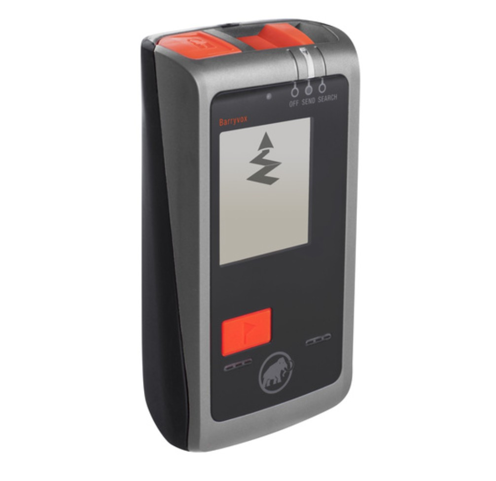

The Beacons That I Have Owned
Beacons have improved considerably over the last 20 years. My beacons have broke, just as the next generation of beacons came on the market. Here I tell my experience, with some tips on owning a beacon. Luckily, I have never had to use my beacon in a rescue!
The Classic F1
The F1 was an analog beacon it took two AA batteries. As a result, the batteries would last a whole season even with heavy use, which is superior to modern beacons. But, you really had to practice. Multiple burials were were insanely difficult. I still use it for practice searches. Once, I buried a beacon in school field without turning it on. It took me a fine grid search to find it. Its nice to have an old beacon to bury and get wet and snowy. Another good use of F1 is to bury it with your food cache.
The beacon broke just as the new digital beacons were coming out. I was doing a beacon check, and the unit would not pick up any other beacons. A beacon check is not just about checking if everyone is sending!
Pieps DSP
After the tracker this beacon was the second digital beacon that I looked at. The Pieps had a much better mark function than the tracker one and slightly better range. Almost immediately I noticed the lock mechanism was under designed. After about 5 years of solid use I got some food in the button and it broke when I tried to clean the food out. There has subsequently been a recall on the beacon and its newer version, Pieps recall. Black diamond bought Pieps and has had to recall on the even newer models.
Tracker 1
The tracker one works great for single burials. The multiple burial function is very difficult to use. After my Pieps broke, I borrowed a friends beacon that she had retired do to age. After probably 300 days of use, I was doing a beacon check and the unit would no longer pick up any other beacon. It would send fine, but not receive or give any error message. These models should be retired. But keep your retired beacon around as a spare beacon and to practice multiple burials.
Barryvox Element
This is an excellent beacon, I bought one for my nephew to do the Dive at Sunshine Village with. After a season of use I somehow manage to lose it. If you buy it used, down’t overpay some of these units could have 400 days on them. You should regular check the send and receive function on them.
Tracker 3/S/4
They mostly differ from each other only in how the revert to send mode from being in receive mode. Most people buy them because they are the cheapest. Compared to the new Barryvox beacons they suffer from losing signal but if you keep walking in a straight direction they pick it back up. I bought for my Nephew to ski the dive because of the price.
Mammut Barryvox

This my current beacon. It costs a little more than the other beacons. It has long range, unlike the Tracker 3, S, 4 no dead signals. The only defect, is corrosion of the battery terminals do to moisture getting in the battery compartment. Store without the batteries in it over the summer and dry out the battery compartment after very moist days. Battery life is not that good. Doing a practice session will typically drop the battery indicator 20 percentage points. Always carry extra batteries.
Batteries
All modern beacons now take 3 AAA batteries. - Don’t use rechargeable batteries. The charge rapidly declines below 60 percent, and are unpredictable in the cold. - Prior to a multiple day trip, I’ll make sure my batteries are over 85%. - prior to a single day trip, I will replace the batteries if they are below 55%. - Always carry a backup pair of batteries. Its easy to accidentally leave your beacon on at the end of the day. - I use a headlamp with same size and number of batteries. - Use batteries as groups of three. Never replace a single battery. - Use Duracell or Energizer batteries. Kirkland (Costco) batteries have a good reputation but I have not used them. Other manufactures have lower tolerances for battery length and reduced battery life. - The springs in the battery compartment sometimes fatigue and become shorter or get corroded, inspect them regularly.
Beacon Check
In the morning rush to get out of the car or hut, it is easy to forget to turn your beacon on. On more than one occasion I have found a ski partner (expert and beginner) that did not turn on there beacon.
Beacons fail, they are sensitive pieces of electronics. I suspect most units fail from water damage or being dropped. Regularly test the send and receive functions.
When to use a Beacon
Resort Skiing
- If your skiing terrain that has just opened for the season.
- On a 30cm+ day or multiple 20 cm+ days and your skiing off the groomers.
- If its a hot spring day (10C+) and your in the double black runs.
Ice Climbing
It hasn’t been a tradition for ice climbers to wear avalanche gear, but that is slowly changing. Even if you don’t bring a shovel and probe, wear a beacon if there is avalanche terrain on the approach or above the climb. Choose a smaller beacon (Pieps Micro). Rescues are a lot easier on parks staff if you have a beacon on. Parks can hang a beacon detector below the helicopter and clear avalanche debris without getting out of the helicopter.
Backcountry Skiing
Unless your skinning on the cross-country ski trails or up a ski resort, wear a beacon. If you go solo backcountry skiing there are usually other people in the area, I’ve hooked up for a run or spotted lots of solo people doing a run in the backcountry.
Summer Mountaineering
Generally, its better to turn around if conditions warrant wearing avalanche gear. Most avalanche victims end up going into crevasses or over cliffs. I would at least recommend having a conversation about it with your climbing partners. Fall and late spring in the high alpine tend to see the majority of fatalities. In the fall, new snow bounds poorly to the glacier ice. In late spring the winter instabilities are still settling down in the high alpine. Most of the accidents have been near the death trap near Lake Louise and on the Ramp route in Spring or in Fall on Mt Athabasca.